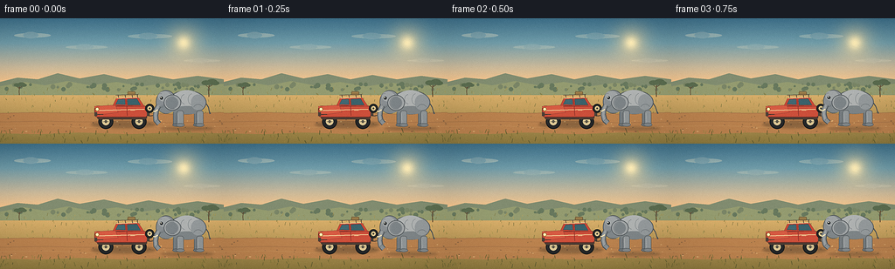
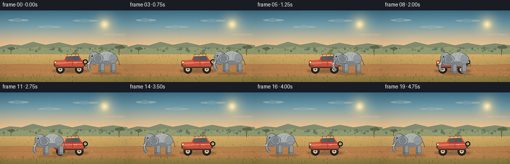

CODING AGENTS AS PIXEL WORLD MODELS
traex/DeepSeek-V4.1-Flash · dynamic_spatial_relationship_0067
点击播放 · 原生 RGB 像素
逐轮保存的候选
回放视频、检查图与代码变化。
每份候选均可单独播放。实际图片检查记录在下方工具轨迹中。
候选 01播放与检查图
点击播放 · 原生 RGB 像素


展开代码变化
--- 上一保存版本
+++ 本次保存版本
@@ -0,0 +1,630 @@
+from __future__ import annotations
+
+import math
+from pathlib import Path
+
+import numpy as np
+from PIL import Image, ImageDraw, ImageFilter
+
+from artifact_io import save
+
+
+CASE_DIR = Path(__file__).resolve().parent
+WIDTH, HEIGHT, FRAMES, FPS = 256, 144, 20, 4
+SS = 4
+CANVAS = (WIDTH * SS, HEIGHT * SS)
+
+
+def rgb(value: str) -> tuple[int, int, int]:
+ value = value.lstrip("#")
+ return tuple(int(value[i : i + 2], 16) for i in (0, 2, 4))
+
+
+def sx(value: float) -> int:
+ return round(value * SS)
+
+
+def pt(x: float, y: float) -> tuple[int, int]:
+ return sx(x), sx(y)
+
+
+def box(x0: float, y0: float, x1: float, y1: float) -> tuple[int, int, int, int]:
+ return sx(x0), sx(y0), sx(x1), sx(y1)
+
+
+def width(value: float) -> int:
+ return max(1, round(value * SS))
+
+
+def alpha_layer() -> tuple[Image.Image, ImageDraw.ImageDraw]:
+ layer = Image.new("RGBA", CANVAS, (0, 0, 0, 0))
+ return layer, ImageDraw.Draw(layer)
+
+
+def composite(base: Image.Image, layer: Image.Image) -> Image.Image:
+ return Image.alpha_composite(base.convert("RGBA"), layer).convert("RGB")
+
+
+def vertical_gradient(stops: list[tuple[float, tuple[int, int, int]]]) -> np.ndarray:
+ ys = np.arange(HEIGHT * SS, dtype=np.float32) / SS
+ array = np.empty((HEIGHT * SS, WIDTH * SS, 3), dtype=np.uint8)
+ for row, y in enumerate(ys):
+ if y <= stops[0][0]:
+ color = stops[0][1]
+ elif y >= stops[-1][0]:
+ color = stops[-1][1]
+ else:
+ for (y0, c0), (y1, c1) in zip(stops[:-1], stops[1:]):
+ if y0 <= y <= y1:
+ t = (y - y0) / (y1 - y0)
+ color = tuple(round(a + (b - a) * t) for a, b in zip(c0, c1))
+ break
+ array[row, :, :] = color
+ return array
+
+
+def add_radial_glow(
+ array: np.ndarray,
+ center: tuple[float, float],
+ radius: float,
+ color: tuple[int, int, int],
+ strength: float,
+) -> None:
+ yy, xx = np.mgrid[0 : array.shape[0], 0 : array.shape[1]].astype(np.float32)
+ cx, cy = center[0] * SS, center[1] * SS
+ distance = np.sqrt((xx - cx) ** 2 + (yy - cy) ** 2)
+ alpha = np.exp(-((distance / (radius * SS)) ** 2) * 2.2) * strength
+ alpha = np.clip(alpha, 0.0, 1.0)[..., None]
+ array[:] = np.clip(
+ array.astype(np.float32) * (1.0 - alpha)
+ + np.asarray(color, dtype=np.float32) * alpha,
+ 0,
+ 255,
+ ).astype(np.uint8)
+
+
+def make_background() -> Image.Image:
+ array = vertical_gradient(
+ [
+ (0.0, rgb("#3d708d")),
+ (28.0, rgb("#6f9cac")),
+ (56.0, rgb("#c7b89c")),
+ (72.0, rgb("#efc28e")),
+ (76.0, rgb("#e4b875")),
+ (144.0, rgb("#8b793f")),
+ ]
+ )
+ add_radial_glow(array, (210.0, 28.0), 28.0, rgb("#ffdda0"), 0.52)
+ add_radial_glow(array, (210.0, 28.0), 11.0, rgb("#fff0bd"), 0.96)
+ image = Image.fromarray(array, "RGB")
+ draw = ImageDraw.Draw(image)
+
+ # High, thin clouds.
+ clouds, cd = alpha_layer()
+ cloud_specs = [
+ (16, 17, 42, 5, 75),
+ (75, 31, 48, 4, 48),
+ (146, 18, 51, 5, 58),
+ (210, 47, 42, 3, 38),
+ ]
+ for x, y, length, thickness, opacity in cloud_specs:
+ cd.ellipse(box(x, y, x + length, y + thickness), fill=(255, 242, 214, opacity))
+ cd.ellipse(
+ box(x + length * 0.25, y - 1.5, x + length * 0.66, y + thickness + 1),
+ fill=(255, 246, 225, opacity // 2),
+ )
+ image = composite(image, clouds)
+ draw = ImageDraw.Draw(image)
+
+ # Layered dry-season hills.
+ draw.polygon(
+ [
+ pt(0, 73),
+ pt(20, 68),
+ pt(43, 70),
+ pt(66, 63),
+ pt(91, 69),
+ pt(119, 64),
+ pt(145, 70),
+ pt(170, 65),
+ pt(198, 70),
+ pt(226, 66),
+ pt(256, 70),
+ pt(256, 83),
+ pt(0, 83),
+ ],
+ fill=rgb("#7f8c72"),
+ )
+ draw.polygon(
+ [
+ pt(0, 78),
+ pt(28, 73),
+ pt(51, 77),
+ pt(77, 72),
+ pt(104, 77),
+ pt(133, 73),
+ pt(163, 78),
+ pt(192, 74),
+ pt(224, 78),
+ pt(256, 75),
+ pt(256, 88),
+ pt(0, 88),
+ ],
+ fill=rgb("#929b72"),
+ )
+
+ # Distant tree line.
+ tree_rng = np.random.default_rng(91)
+ for _ in range(44):
+ x = float(tree_rng.uniform(0, 256))
+ y = float(tree_rng.uniform(75, 82))
+ r = float(tree_rng.uniform(1.0, 2.8))
+ color = rgb("#66785f") if tree_rng.random() < 0.6 else rgb("#788568")
+ draw.ellipse(box(x - r, y - r, x + r, y + r), fill=color)
+
+ # Two small acacias give the horizon scale without competing with the action.
+ draw_acacia(draw, 239.0, 90.0, 0.78)
+ draw_acacia(draw, 22.0, 88.0, 0.56)
+
+ # Ground texture above the road.
+ grass_rng = np.random.default_rng(1729)
+ for _ in range(145):
+ x = float(grass_rng.uniform(0, 256))
+ y = float(grass_rng.uniform(82, 111))
+ length = float(grass_rng.uniform(1.2, 3.7))
+ lean = float(grass_rng.uniform(-1.3, 1.3))
+ shade = grass_rng.choice([rgb("#8a8349"), rgb("#a49350"), rgb("#746f3d"), rgb("#b4a15c")])
+ draw.line([pt(x, y), pt(x + lean, y - length)], fill=tuple(shade), width=width(0.55))
+
+ # Broad dirt track.
+ draw.polygon(
+ [
+ pt(0, 109),
+ pt(44, 108),
+ pt(91, 109),
+ pt(142, 108),
+ pt(198, 110),
+ pt(256, 108),
+ pt(256, 132),
+ pt(199, 131),
+ pt(145, 133),
+ pt(92, 131),
+ pt(44, 133),
+ pt(0, 132),
+ ],
+ fill=rgb("#b88250"),
+ )
+ draw.line(
+ [pt(0, 109), pt(44, 108), pt(91, 109), pt(142, 108), pt(198, 110), pt(256, 108)],
+ fill=rgb("#9c7048"),
+ width=width(0.8),
+ )
+ draw.line(
+ [pt(0, 119), pt(48, 118), pt(96, 119), pt(145, 118), pt(196, 120), pt(256, 119)],
+ fill=rgb("#9f7047"),
+ width=width(0.7),
+ )
+ draw.line(
+ [pt(0, 124), pt(54, 123), pt(105, 125), pt(158, 123), pt(209, 125), pt(256, 124)],
+ fill=rgb("#ca9a65"),
+ width=width(0.55),
+ )
+ stone_rng = np.random.default_rng(411)
+ for _ in range(62):
+ x = float(stone_rng.uniform(0, 256))
+ y = float(stone_rng.uniform(111, 132))
+ r = float(stone_rng.uniform(0.35, 1.2))
+ color = rgb("#8f6844") if stone_rng.random() < 0.55 else rgb("#d2a56e")
+ draw.ellipse(box(x - r, y - r * 0.55, x + r, y + r * 0.55), fill=color)
+
+ # Foreground grasses frame the track.
+ for _ in range(86):
+ x = float(grass_rng.uniform(0, 256))
+ y = float(grass_rng.uniform(131, 144))
+ length = float(grass_rng.uniform(2.0, 5.2))
+ lean = float(grass_rng.uniform(-1.8, 1.8))
+ shade = grass_rng.choice([rgb("#6f6735"), rgb("#83763b"), rgb("#5f5c31"), rgb("#9b8446")])
+ draw.line([pt(x, y), pt(x + lean, y - length)], fill=tuple(shade), width=width(0.65))
+
+ return image
+
+
+def draw_acacia(draw: ImageDraw.ImageDraw, x: float, ground: float, scale: float) -> None:
+ trunk = rgb("#5c4932")
+ canopy = rgb("#596b50")
+ draw.line(
+ [pt(x, ground), pt(x - 0.4 * scale, ground - 8 * scale), pt(x + 0.3 * scale, ground - 17 * scale)],
+ fill=trunk,
+ width=width(1.25 * scale),
+ )
+ draw.line(
+ [pt(x, ground - 13 * scale), pt(x - 7 * scale, ground - 19 * scale)],
+ fill=trunk,
+ width=width(0.8 * scale),
+ )
+ draw.line(
+ [pt(x, ground - 14 * scale), pt(x + 7 * scale, ground - 19 * scale)],
+ fill=trunk,
+ width=width(0.8 * scale),
+ )
+ draw.ellipse(
+ box(x - 11 * scale, ground - 24 * scale, x + 2 * scale, ground - 17 * scale),
+ fill=canopy,
+ )
+ draw.ellipse(
+ box(x - 3 * scale, ground - 26 * scale, x + 12 * scale, ground - 18 * scale),
+ fill=canopy,
+ )
+ draw.ellipse(
+ box(x + 3 * scale, ground - 23 * scale, x + 15 * scale, ground - 17 * scale),
+ fill=canopy,
+ )
+
+
+def soft_shadow(base: Image.Image, bounds: tuple[float, float, float, float], opacity: int) -> Image.Image:
+ layer, draw = alpha_layer()
+ draw.ellipse(box(*bounds), fill=(27, 31, 27, opacity))
+ layer = layer.filter(ImageFilter.GaussianBlur(radius=1.25 * SS))
+ return composite(base, layer)
+
+
+def draw_car(image: Image.Image) -> Image.Image:
+ image = soft_shadow(image, (104, 118, 178, 126), 75)
+
+ # Wheels sit behind the fenders.
+ for cx in (121.0, 159.0):
+ draw = ImageDraw.Draw(image)
+ draw.ellipse(box(cx - 8.4, 110.1, cx + 8.4, 126.9), fill=rgb("#25282a"))
+ draw.ellipse(
+ box(cx - 8.4, 110.1, cx + 8.4, 126.9),
+ outline=rgb("#121516"),
+ width=width(0.8),
+ )
+ draw.ellipse(box(cx - 4.3, 114.2, cx + 4.3, 122.8), fill=rgb("#d9c696"))
+ draw.ellipse(box(cx - 1.4, 117.1, cx + 1.4, 119.9), fill=rgb("#4a4a43"))
+ draw.line([pt(cx - 3.6, 118.5), pt(cx + 3.6, 118.5)], fill=rgb("#82785f"), width=width(0.55))
+
+ # Chassis and main body.
+ draw.rounded_rectangle(box(111, 108, 168, 116), radius=sx(2.4), fill=rgb("#4c3c34"))
+ draw.rounded_rectangle(
+ box(108, 100.5, 169, 113.5),
+ radius=sx(3.5),
+ fill=rgb("#c94f3c"),
+ outline=rgb("#772e29"),
+ width=width(0.75),
+ )
+ draw.polygon(
+ [pt(108, 101), pt(132, 99.5), pt(135, 108), pt(111, 111)],
+ fill=rgb("#d35b44"),
+ outline=rgb("#772e29"),
+ )
+
+ # Cabin and windows.
+ draw.polygon(
+ [pt(129, 100), pt(133, 91.5), pt(158, 90.5), pt(165, 101)],
+ fill=rgb("#c44938"),
+ outline=rgb("#772e29"),
+ )
+ draw.polygon(
+ [pt(132.3, 98.7), pt(135.1, 93.0), pt(142.8, 92.8), pt(143.3, 99.0)],
+ fill=rgb("#416874"),
+ outline=rgb("#263d43"),
+ )
+ draw.polygon(
+ [pt(145.4, 92.7), pt(156.5, 92.2), pt(160.7, 99.5), pt(145.8, 99.6)],
+ fill=rgb("#3b626d"),
+ outline=rgb("#263d43"),
+ )
+ draw.line([pt(144.0, 92.8), pt(144.6, 99.4)], fill=rgb("#9d372f"), width=width(1.25))
+ draw.line([pt(133.2, 91.5), pt(158.3, 90.5)], fill=rgb("#f1d39f"), width=width(1.05))
+
+ # Safari roof rack and small cargo bundle.
+ draw.line([pt(132.5, 88.3), pt(158.0, 87.3)], fill=rgb("#4b4239"), width=width(0.8))
+ for x in (135.0, 143.0, 151.0, 157.0):
+ draw.line([pt(x, 87.7), pt(x + 0.5, 91.0)], fill=rgb("#4b4239"), width=width(0.65))
+ draw.rounded_rectangle(
+ box(146.0, 84.0, 154.8, 88.0),
+ radius=sx(1.0),
+ fill=rgb("#8f7447"),
+ outline=rgb("#5d4b33"),
+ width=width(0.45),
+ )
+ draw.line([pt(147.0, 85.0), pt(153.8, 85.0)], fill=rgb("#b29157"), width=width(0.5))
+
+ # Body trim, door, and lights.
+ draw.line([pt(111, 105.7), pt(165, 104.2)], fill=rgb("#f0d49f"), width=width(1.0))
+ draw.line([pt(145.0, 101.0), pt(145.6, 111.8)], fill=rgb("#8f332c"), width=width(0.65))
+ draw.line([pt(149.2, 105.8), pt(154.0, 105.6)], fill=rgb("#f1d39f"), width=width(0.75))
+ draw.ellipse(
+ box(109.0, 102.2, 113.2, 106.4),
+ fill=rgb("#ffe39b"),
+ outline=rgb("#7c5427"),
+ width=width(0.4),
+ )
+ draw.ellipse(box(110.2, 103.2, 111.7, 104.7), fill=rgb("#fff8d9"))
+ draw.rectangle(box(108.0, 108.0, 111.0, 112.0), fill=rgb("#4a4039"))
+ draw.rectangle(box(168.0, 107.4, 171.0, 112.0), fill=rgb("#4a4039"))
+ draw.line([pt(111, 110.3), pt(118, 110.2)], fill=rgb("#3e3530"), width=width(0.8))
+
+ # Spare wheel and rear bumper.
+ draw.ellipse(
+ box(166.0, 98.2, 176.3, 108.5),
+ fill=rgb("#282b2c"),
+ outline=rgb("#141718"),
+ width=width(0.7),
+ )
+ draw.ellipse(box(168.5, 100.7, 173.8, 106.0), fill=rgb("#d8c28e"))
+ draw.ellipse(box(170.2, 102.4, 172.1, 104.3), fill=rgb("#494941"))
+ draw.line([pt(170.0, 112.0), pt(176.5, 111.4)], fill=rgb("#3e3530"), width=width(1.1))
+
+ return image
+
+
+def draw_elephant(
+ image: Image.Image,
+ center_x: float,
+ ground_y: float,
+ scale: float,
+ phase: float,
+ stride_amount: float,
+ body_bob: float,
+ trunk_lift: float,
+ ear_flap: float,
+) -> Image.Image:
+ def ex(x: float) -> float:
+ return center_x + x * scale
+
+ def ey(y: float) -> float:
+ return ground_y - 30.0 * scale + y * scale + body_bob
+
+ def ep(x: float, y: float) -> tuple[int, int]:
+ return pt(ex(x), ey(y))
+
+ def eb(x0: float, y0: float, x1: float, y1: float) -> tuple[int, int, int, int]:
+ return box(ex(x0), ey(y0), ex(x1), ey(y1))
+
+ image = soft_shadow(
+ image,
+ (
+ center_x - 34.0 * scale,
+ ground_y + 0.2,
+ center_x + 34.0 * scale,
+ ground_y + 5.4 * scale,
+ ),
+ 58,
+ )
+ draw = ImageDraw.Draw(image)
+
+ dark = rgb("#5f666b")
+ outline = rgb("#4d5459")
+ mid = rgb("#8f969b")
+ light = rgb("#adb2b5")
+ far = rgb("#747c82")
+ foot = rgb("#6e757a")
+
+ stride = math.sin(phase) * stride_amount
+ far_stride = -stride
+
+ # Far legs establish the alternating gait behind the body.
+ for lx, offset in ((-14.5, far_stride), (13.5, -far_stride)):
+ draw.rounded_rectangle(
+ eb(lx - 3.9 + offset, 10.5, lx + 3.9 + offset, 29.3),
+ radius=sx(2.7 * scale),
+ fill=far,
+ outline=outline,
+ width=width(0.55),
+ )
+ draw.ellipse(
+ eb(lx - 5.0 + offset, 26.1, lx + 5.2 + offset, 30.4),
+ fill=foot,
+ outline=outline,
+ width=width(0.45),
+ )
+
+ # Tail.
+ tail_sway = 1.2 * math.sin(phase * 0.55 + 0.8)
+ draw.line(
+ [ep(22.4, -1.5), ep(27.0, 5.5), ep(28.2 + tail_sway, 12.5)],
+ fill=outline,
+ width=width(1.25 * scale),
+ joint="curve",
+ )
+ draw.line(
+ [ep(28.2 + tail_sway, 12.0), ep(29.0 + tail_sway, 14.2)],
+ fill=rgb("#4e555a"),
+ width=width(1.8 * scale),
+ )
+
+ # Body masses and shading.
+ draw.ellipse(eb(-24.8, -15.8, 24.4, 14.8), fill=mid, outline=outline, width=width(0.8))
+ draw.ellipse(eb(-19.2, -16.0, 18.4, 8.8), fill=light)
+ draw.ellipse(eb(-19.5, 4.2, 18.8, 14.5), fill=rgb("#7d858a"))
+ draw.ellipse(eb(5.0, -10.5, 22.0, 9.2), fill=rgb("#92999e"))
+
+ # Fine skin folds.
+ draw.arc(eb(1.0, -12.0, 13.0, 3.0), 102, 257, fill=rgb("#7b8388"), width=width(0.5))
+ draw.arc(eb(-8.0, -11.0, 4.0, 2.0), 103, 254, fill=rgb("#7b8388"), width=width(0.45))
+ draw.arc(eb(8.0, 2.0, 20.0, 12.0), 195, 342, fill=rgb("#697176"), width=width(0.5))
+
+ # Near legs.
+ for lx, offset in ((-9.5, -stride), (17.0, stride)):
+ draw.rounded_rectangle(
+ eb(lx - 4.2 + offset, 10.0, lx + 4.2 + offset, 29.5),
+ radius=sx(2.8 * scale),
+ fill=mid,
+ outline=outline,
+ width=width(0.6),
+ )
+ draw.line(
+ [ep(lx - 2.7 + offset, 13.5), ep(lx - 2.2 + offset, 25.0)],
+ fill=rgb("#9ea4a8"),
+ width=width(1.0),
+ )
+ draw.ellipse(
+ eb(lx - 5.3 + offset, 26.0, lx + 5.5 + offset, 30.5),
+ fill=rgb("#80878c"),
+ outline=outline,
+ width=width(0.45),
+ )
+
+ # Head, forehead, and cheek.
+ draw.ellipse(eb(-39.8, -16.0, -13.8, 14.0), fill=rgb("#878e94"), outline=outline, width=width(0.8))
+ draw.ellipse(eb(-37.0, -14.8, -21.0, -1.8), fill=rgb("#9da3a7"))
+ draw.ellipse(eb(-35.8, 1.0, -16.2, 13.2), fill=rgb("#7e868c"))
+
+ # Ear is a broad hinged fan, with a lighter rim and darker inner fold.
+ ear_dx = ear_flap * 0.85
+ ear_dy = 0.35 * math.sin(phase * 0.8)
+ draw.ellipse(
+ eb(-29.8 + ear_dx, -10.0 + ear_dy, -7.8 + ear_dx, 10.0 + ear_dy),
+ fill=rgb("#9da3a7"),
+ outline=outline,
+ width=width(0.7),
+ )
+ draw.ellipse(
+ eb(-26.0 + ear_dx, -7.2 + ear_dy, -11.5 + ear_dx, 7.4 + ear_dy),
+ fill=rgb("#7b8389"),
+ )
+ draw.arc(
+ eb(-27.0 + ear_dx, -8.0 + ear_dy, -10.5 + ear_dx, 8.2 + ear_dy),
+ 70,
+ 285,
+ fill=rgb("#656d73"),
+ width=width(0.45),
+ )
+
+ # Trunk is built as a tapered chain so the swing remains smooth.
+ sway = 1.8 * math.sin(phase * 0.62 + 0.4)
+ trunk_points = [
+ ep(-36.0, 3.5),
+ ep(-39.0 + sway * 0.2, 9.0),
+ ep(-40.0 + sway * 0.55, 16.0),
+ ep(-39.0 + sway, 22.2 - trunk_lift),
+ ep(-35.0 + sway * 1.25, 26.2 - trunk_lift * 1.25),
+ ]
+ draw.line(trunk_points, fill=outline, width=width(6.7 * scale), joint="curve")
+ draw.line(trunk_points, fill=rgb("#888f94"), width=width(4.8 * scale), joint="curve")
+ draw.line(trunk_points[:4], fill=rgb("#9aa0a4"), width=width(2.0 * scale), joint="curve")
+ draw.arc(
+ eb(-39.4 + sway, 21.0 - trunk_lift, -34.2 + sway, 27.0 - trunk_lift),
+ 185,
+ 340,
+ fill=rgb("#687075"),
+ width=width(0.55),
+ )
+
+ # Tusks, eye, mouth, and a few facial creases.
+ draw.line(
+ [ep(-37.2, 8.8), ep(-41.0, 11.0), ep(-43.0, 10.4)],
+ fill=rgb("#f0dfb5"),
+ width=width(1.35 * scale),
+ joint="curve",
+ )
+ draw.ellipse(eb(-34.5, -8.0, -30.8, -4.3), fill=rgb("#22282c"))
+ draw.ellipse(eb(-33.8, -7.5, -32.5, -6.2), fill=rgb("#f4eee0"))
+ draw.arc(eb(-37.0, -1.0, -29.5, 5.8), 15, 135, fill=rgb("#626a70"), width=width(0.55))
+ draw.arc(eb(-38.2, -12.0, -29.0, -1.0), 200, 285, fill=rgb("#71797f"), width=width(0.45))
+
+ return image
+
+
+def draw_dust(image: Image.Image, frame: int, positions: list[tuple[float, float]]) -> Image.Image:
+ layer, draw = alpha_layer()
+ for age, (x, y) in enumerate(positions):
+ if x < 4 or x > 252:
+ continue
+ radius = 1.4 + age * 0.75
+ opacity = max(10, 48 - age * 8)
+ draw.ellipse(
+ box(x - radius, y - radius * 0.45, x + radius, y + radius * 0.45),
+ fill=(213, 174, 119, opacity),
+ )
+ layer = layer.filter(ImageFilter.GaussianBlur(radius=0.55 * SS))
+ return composite(image, layer)
+
+
+def elephant_center(frame: int) -> tuple[float, float, float, float]:
+ start, end = 214.0, 58.0
+ u = min(1.0, max(0.0, (frame - 1.5) / 15.0))
+ eased = u * u * (3.0 - 2.0 * u)
+ x = start + (end - start) * eased
+ y = 124.0 + 2.6 * math.sin(math.pi * eased) * (1.0 - 0.25 * eased)
+ return x, y, eased, u
+
+
+def render_frame(background: Image.Image, frame: int) -> np.ndarray:
+ image = background.copy()
+ cx, ground, eased, u = elephant_center(frame)
+
+ moving = 0.0 < u < 1.0
+ phase = (frame - 1.5) * 0.82
+ stride_amount = 3.2 * (0.25 + 0.75 * (math.sin(math.pi * u) if moving else 0.0))
+ body_bob = -0.85 * abs(math.sin(phase)) if moving else 0.0
+ trunk_lift = 1.2 * eased + 0.65 * math.sin(phase * 0.48)
+ ear_flap = 0.8 * math.sin(phase * 0.72 + 0.9) if moving else 0.25 * math.sin(phase * 0.72 + 0.9)
+
+ # Dust is emitted from the rear foot and drifts behind the walking elephant.
+ dust_positions: list[tuple[float, float]] = []
+ if moving:
+ for age in range(5):
+ source_frame = frame - age
+ if source_frame < 1:
+ continue
+ old_cx, old_ground, old_eased, _ = elephant_center(source_frame)
+ if not (0.0 < old_eased < 1.0):
+ continue
+ dust_positions.append((old_cx + 20.5 + age * 1.4, old_ground + 0.8 - age * 0.15))
+ image = draw_dust(image, frame, dust_positions)
+
+ image = draw_car(image)
+ image = draw_elephant(
+ image,
+ center_x=cx,
+ ground_y=ground,
+ scale=0.9,
+ phase=phase,
+ stride_amount=stride_amount,
+ body_bob=body_bob,
+ trunk_lift=trunk_lift,
+ ear_flap=ear_flap,
+ )
+
+ # A foreground dust kiss near the planted feet sells weight without obscuring the animal.
+ if moving:
+ front_dust = [(cx + 19.0, ground + 1.2), (cx + 24.0, ground + 1.5)]
+ image = draw_dust(image, frame, front_dust)
+
+ small = image.resize((WIDTH, HEIGHT), Image.Resampling.LANCZOS)
+ small = small.filter(ImageFilter.UnsharpMask(radius=0.55, percent=72, threshold=2))
+ array = np.asarray(small, dtype=np.float32)
+
+ # Gentle vignette and warm highlight grade.
+ yy, xx = np.mgrid[0:HEIGHT, 0:WIDTH].astype(np.float32)
+ nx = (xx - (WIDTH - 1) / 2) / ((WIDTH - 1) / 2)
+ ny = (yy - (HEIGHT - 1) / 2) / ((HEIGHT - 1) / 2)
+ radius = np.sqrt(nx * nx + ny * ny)
+ vignette = np.clip(1.0 - 0.12 * np.maximum(radius - 0.55, 0.0) ** 1.45, 0.84, 1.0)
+ array *= vignette[..., None]
+ array[..., 0] *= 1.018
+ array[..., 1] *= 1.006
+ array[..., 2] *= 0.985
+ array = np.clip(array, 0, 255).astype(np.uint8)
+
+ # Deterministic, very light grain avoids banding in the sky.
+ grain_rng = np.random.default_rng(1000 + frame)
+ grain = grain_rng.normal(0.0, 1.35, (HEIGHT, WIDTH, 1))
+ array = np.clip(array.astype(np.float32) + grain, 0, 255).astype(np.uint8)
+ return array
+
+
+def main() -> None:
+ background = make_background()
+ frames = [render_frame(background, frame) for frame in range(FRAMES)]
+ stacked = np.stack(frames).astype(np.uint8)
+ assert stacked.shape == (FRAMES, HEIGHT, WIDTH, 3)
+ save(stacked, CASE_DIR)
+ print(f"wrote {FRAMES} RGB frames to {CASE_DIR}")
+
+
+if __name__ == "__main__":
+ main()
候选 02播放与检查图
点击播放 · 原生 RGB 像素

展开代码变化
--- 上一保存版本
+++ 本次保存版本
@@ -96,7 +96,7 @@
)
add_radial_glow(array, (210.0, 28.0), 28.0, rgb("#ffdda0"), 0.52)
add_radial_glow(array, (210.0, 28.0), 11.0, rgb("#fff0bd"), 0.96)
- image = Image.fromarray(array, "RGB")
+ image = Image.fromarray(array)
draw = ImageDraw.Draw(image)
# High, thin clouds.
可观测工具轨迹
实际执行的命令与返回图片。
命令 1exit 0
/bin/bash -c "pwd && rg --files -g 'prompt.txt' -g 'GENERATION_RULES.md' -g 'task_spec.json' -g '"'!**/.git/**'"'"
命令 2exit 0
/bin/bash -c 'ls -la'
命令 3exit 0
/bin/bash -c 'git status --short --branch'
命令 4exit 0
/bin/bash -c 'cat prompt.txt'
命令 5exit 0
/bin/bash -c 'cat GENERATION_RULES.md'
命令 6exit 0
/bin/bash -c 'cat task_spec.json'
命令 7exit 0
/bin/bash -c "sed -n '1,240p' artifact_io.py"
命令 8exit 0
/bin/bash -c "sed -n '1,240p' player_template.html"
命令 9exit 0
/bin/bash -c 'python generate.py'
命令 10exit 0
/bin/bash -c 'which chafa || true; which viu || true; which img2txt || true; which ffmpeg || true'
命令 11exit 0
/bin/bash -c "python - <<'PY'
from PIL import Image
from pathlib import Path
for p in ['inspection.png','transition_check.png','frames/00.png','frames/10.png','frames/19.png']:
im=Image.open(p)
print(p, im.size, im.mode)
PY"命令 12exit 0
/bin/bash -c "find . -maxdepth 2 -type f -printf '%p %s bytes\\n' | sort"
命令 13exit 0
/bin/bash -c "python - <<'PY'
from PIL import Image
from pathlib import Path
import numpy as np
for p in sorted(Path('frames').glob('*.png')):
a=np.asarray(Image.open(p)).astype(np.float32)
# detect red car pixels and grey elephant pixels
r,g,b=a[...,0],a[...,1],a[...,2]
car=(r>130)&(r>g*1.35)&(r>b*1.25)&(g<130)
ele=(abs(r-g)<16)&(abs(g-b)<16)&(r>70)&(r<210)
ys,xs=np.where(car)
ey,ex=np.where(ele)
print(p.name, 'car', (xs.min(),xs.max(),ys.min(),ys.max()) if len(xs) else None, 'ele', (ex.min(),ex.max(),ey.min(),ey.max()) if len(ex) else None)
PY"命令 14exit 0
/bin/bash -c "python - <<'PY'
from PIL import Image
import numpy as np
for fn in ['frames/00.png','frames/06.png','frames/10.png','frames/14.png','frames/19.png']:
im=np.array(Image.open(fn))
# resize 128x72 nearest then categories
sm=np.array(Image.fromarray(im).resize((96,54), Image.Resampling.NEAREST))
print('\\n',fn)
for row in sm:
line=''
for r,g,b in row:
if r>120 and r>g*1.35 and r>b*1.2 and g<135: c='R'
elif abs(int(r)-int(g))<18 and abs(int(g)-int(b))<18 and 60<r<205: c='E'
elif b>r+12 and b>g-5 and r<130: c='s'
elif g>r*1.02 and b<g: c='g'
elif r>g+18 and g>b+10 and r>150: c='.'
elif r>180 and g>160: c='~'
else: c=' '
line+=c
print(line.rstrip())
PY"命令 15exit 0
/bin/bash -c "python - <<'PY'
from PIL import Image
import numpy as np
from scipy import ndimage
for i in range(20):
a=np.array(Image.open(f'frames/{i:02d}.png')).astype(float)
r,g,b=a[...,0],a[...,1],a[...,2]
mx=a.max(2); mn=a.min(2)
red=(r>100)&(r-g>38)&(r-b>35)&(g<150)
gray=(mx-mn<24)&(mx>65)&(mx<215)
# object region excludes sky/hills; elephant and car are y 84..130
reg=np.zeros(gray.shape,bool);reg[82:131,:]=True
for name,m in [('red',red®),('gray',gray®)]:
m=ndimage.binary_opening(m,iterations=1)
lab,n=ndimage.label(m)
comps=[]
for j in range(1,n+1):
yy,xx=np.where(lab==j)
if len(xx)>=10: comps.append((len(xx),int(xx.min()),int(xx.max()),int(yy.min()),int(yy.max())))
comps=sorted(comps,reverse=True)[:4]
print(f'{i:02d}',name,comps)
PY"命令 16exit 0
/bin/bash -c "python - <<'PY'
from PIL import Image
im=Image.open('frames/00.png').resize((768,432), Image.Resampling.NEAREST)
im.save('.tmp/frame00_big.png')
im=Image.open('frames/10.png').resize((768,432), Image.Resampling.NEAREST)
im.save('.tmp/frame10_big.png')
im=Image.open('frames/19.png').resize((768,432), Image.Resampling.NEAREST)
im.save('.tmp/frame19_big.png')
PY"命令 17exit 0
/bin/bash -c "python - <<'PY'
from PIL import Image
for f in ['frames/00.png','frames/10.png','frames/19.png']:
im=Image.open(f)
im.crop((0,70,256,144)).resize((1024,296), Image.Resampling.LANCZOS).save('.tmp/'+f.split('/')[-1].replace('.png','_crop.png'))
PY"命令 18exit 0
/bin/bash -c "python - <<'PY'
from PIL import Image, ImageDraw, ImageFont
import numpy as np
from pathlib import Path
ims=[Image.open(p) for p in sorted(Path('frames').glob('*.png'))]
# inspect every frame in a 5x4 contact sheet at 2x, labelled
sheet=Image.new('RGB',(5*512,4*(288+20)),(20,23,27));d=ImageDraw.Draw(sheet)
for i,im in enumerate(ims):
x=(i%5)*512;y=(i//5)*308
d.text((x+8,y+5),f'{i:02d}',fill='white')
sheet.paste(im.resize((512,288),Image.Resampling.LANCZOS),(x,y+20))
sheet.save('.tmp/all_frames.png')
PY"命令 19exit 0
/bin/bash -c "python - <<'PY'
from PIL import Image
import numpy as np
# quick palette and colorfulness stats
for i in [0,10,19]:
a=np.array(Image.open(f'frames/{i:02d}.png'))
print(i, 'mean',a.mean((0,1)).round(1), 'std',a.std((0,1)).round(1), 'p05/50/95',np.percentile(a,(5,50,95),axis=(0,1)).round(1))
PY"命令 20exit 0
/bin/bash -c "python - <<'PY'
from pathlib import Path
import json
import numpy as np
from PIL import Image
z=np.load('pixels.npz')
p=z['pixels']
print('pixels', p.shape, p.dtype, 'range', int(p.min()), int(p.max()))
frames=sorted(Path('frames').glob('*.png'))
print('frames',len(frames), Image.open(frames[0]).mode, Image.open(frames[0]).size)
print('html bytes',Path('index.html').stat().st_size)
text=Path('index.html').read_text()
print('html markers', all(s in text for s in ['const DATA=', 'new Uint32Array', 'window.__pixelReady=true']))
PY"命令 21exit 0
/bin/bash -c 'python -m py_compile generate.py artifact_io.py'
命令 22exit 130
/bin/bash -c 'node --version || true; npx playwright --version || true'
命令 23exit 0
/bin/bash -c "python - <<'PY'
from PIL import Image
import numpy as np
from pathlib import Path
# Check each frame differs, car is stable, and elephant moves monotonically through scene.
frames=np.stack([np.array(Image.open(p)) for p in sorted(Path('frames').glob('*.png'))]).astype(np.int16)
d=np.abs(frames[1:]-frames[:-1]).mean((1,2,3))
print('interframe mean abs diff:', np.round(d,2).tolist())
# fixed crop car signature stability
car=frames[:,100:133,104:180]
print('car crop frame0-vs19 MAE:', np.abs(car[0]-car[-1]).mean().round(3))
# elephant grey components are detected from the right-hand action zone
for i in [0,5,10,15,19]:
a=frames[i].astype(float); r,g,b=a[...,0],a[...,1],a[...,2]; mx=a.max(2);mn=a.min(2)
m=(mx-mn<22)&(mx>65)&(mx<215)
m[:80]=False;m[132:]=False
ys,xs=np.where(m)
print(i, 'grey span', int(xs.min()), int(xs.max()), 'mean',round(xs.mean(),1))
PY"命令 24exit 0
/bin/bash -c "python - <<'PY'
from PIL import Image
import numpy as np
# Render frame crops as ANSI truecolor blocks in terminal for visual inspection.
for fn in ['frames/00.png','frames/07.png','frames/10.png','frames/13.png','frames/19.png']:
im=Image.open(fn).crop((0,78,256,136)).resize((96,29),Image.Resampling.LANCZOS)
a=np.array(im)
print('\\n'+fn)
for row in a:
line=''
for r,g,b in row:
line+=f'\\033[48;2;{r};{g};{b}m '
print(line+'\\033[0m')
PY"命令 25exit 0
/bin/bash -c 'which chromium || which chromium-browser || which google-chrome || true'
命令 26exit 0
/bin/bash -c "git diff -- generate.py | sed -n '1,80p'"
命令 27exit 0
/bin/bash -c 'du -sh . .tmp && ls -lh index.html pixels.npz inspection.png'
命令 28exit 0
/bin/bash -c "python - <<'PY'
from PIL import Image
import numpy as np
from scipy import ndimage
for i in range(20):
a=np.array(Image.open(f'frames/{i:02d}.png')).astype(float)
r,g,b=a[...,0],a[...,1],a[...,2]; mx=a.max(2); mn=a.min(2)
# tight elephant color family
gray=(mx-mn<20)&(mx>95)&(mx<200)
gray[:80]=False; gray[129:]=False
gray[:, :20]=False
lab,n=ndimage.label(ndimage.binary_opening(gray,iterations=1))
best=None
for j in range(1,n+1):
yy,xx=np.where(lab==j)
if len(xx)<80:continue
# elephant has wide body relative to road texture
h=yy.max()-yy.min();w=xx.max()-xx.min()
if best is None or len(xx)>best[0]: best=(len(xx),int(xx.min()),int(xx.max()),int(yy.min()),int(yy.max()))
print(i,best)
PY"命令 29exit 0
/bin/bash -c "python - <<'PY'
from PIL import Image
im=Image.open('inspection.png')
# Keep the first four frames enlarged to make the initial spatial relationship obvious.
im.crop((0,0,1024,165)).resize((1024,165),Image.Resampling.LANCZOS).save('.tmp/opening_strip.png')
PY"命令 30exit 0
/bin/bash -c "python - <<'PY'
from PIL import Image
import numpy as np
for i in [0,6,10,13,19]:
a=np.array(Image.open(f'frames/{i:02d}.png'))
# downsample into rough recognizable color letters, avoiding earlier uint8 overflow
sm=np.array(Image.fromarray(a).resize((128,72),Image.Resampling.BOX)).astype(int)
print('\\nframe',i)
for row in sm:
line=''
for r,g,b in row:
if r>125 and r-g>35 and r-b>30 and g<150: c='C'
elif max(r,g,b)-min(r,g,b)<18 and 95<r<200: c='E'
elif b>r+10 and b>90 and r<160: c=' '
elif g>r-5 and g>b+5: c=':'
elif r>g+15 and g>b+12 and r>150: c='.'
elif r>210 and g>180: c='*'
else: c=' '
line+=c
print(line.rstrip())
PY"命令 31exit 0
/bin/bash -c "python - <<'PY'
from PIL import Image
# sample dominant colors in representative regions for a final visual sanity check
im=Image.open('frames/10.png')
for name,b in [('sky',(0,0,256,50)),('horizon',(0,65,256,85)),('road',(0,108,256,132)),('car',(105,84,180,133)),('elephant',(78,80,147,128))]:
crop=im.crop(b).quantize(colors=5)
print(name,crop.getpalette()[:15])
PY"命令 32exit 0
/bin/bash -c 'python generate.py'
命令 33exit 0
/bin/bash -c "python - <<'PY'
from pathlib import Path
from PIL import Image
import numpy as np
frames=sorted(Path('frames').glob('*.png'))
assert len(frames)==20
arrays=[np.array(Image.open(p)) for p in frames]
assert all(a.shape==(144,256,3) and a.dtype==np.uint8 for a in arrays)
assert len({p.read_bytes() for p in frames}) > 1
z=np.load('pixels.npz')['pixels']
assert z.shape==(144,256,20)
assert (z[...,19] == ((arrays[19][...,0].astype(np.uint32)<<16)|(arrays[19][...,1].astype(np.uint32)<<8)|arrays[19][...,2])).all()
html=Path('index.html').read_text()
assert 'window.__pixelReady=true' in html and html.count('deltas') >= 1
print('validated: 20 frames, 256x144 RGB, 4 fps, npz/html artifacts present')
PY"命令 34exit 0
/bin/bash -c "python - <<'PY'
from pathlib import Path
import numpy as np
from PIL import Image
from scipy import ndimage
spans=[]
for i in range(20):
a=np.asarray(Image.open(f'frames/{i:02d}.png')).astype(float)
mx=a.max(2);mn=a.min(2)
m=(mx-mn<20)&(mx>95)&(mx<200)
m[:80]=False;m[129:]=False;m[:,:20]=False
lab,n=ndimage.label(ndimage.binary_opening(m,iterations=1))
comps=[]
for j in range(1,n+1):
yy,xx=np.where(lab==j)
if len(xx)>500: comps.append((len(xx),xx.mean(),xx.min(),xx.max()))
if not comps: raise SystemExit(f'no elephant in {i}')
_,mean,lo,hi=max(comps)
spans.append(mean)
print(f'{i:02d}: x={lo:.0f}..{hi:.0f}, center={mean:.1f}')
print('monotonic leftward:',all(b<a+0.2 for a,b in zip(spans,spans[1:])))
print('opening right of car:', spans[0] > 170)
print('closing left of car:', spans[-1] < 90)
PY"保存候选 2 份；完成命令 34 次；可验证图片返回 0 张。原始 API 响应与完整日志保留在本地。